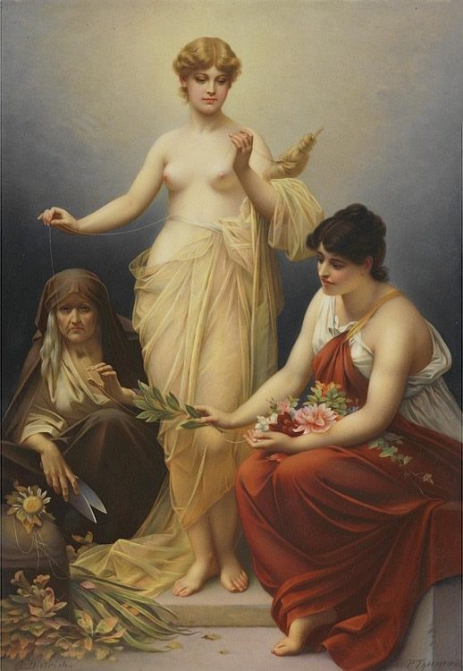

soul contract / karmic relationship
ソウルコントラクト
離れたいのに、なぜか関係を切れない。ソウルコントラクトとカルマの関係を、キャロライン・メイスの「聖なる契約」、プラトン『国家』のエルの物語、業・縁の意味とともに整理し、力を与える関係との違い、関係を見つめ直す四つの手順、共依存やトラウマ・ボンディングとの接点をたどります。

強く引かれた相手なのに、関係のなかで自分の輪郭が薄れていく。離れたい気持ちがあっても離れられず、理由を探すなかで「その人とは、魂の契約があるのです」と聞くことがあります。
ソウルコントラクト、カルマの関係、カルミックな相手。こうした言葉は、強い引力と苦しさが同居する関係を語る際に用いられます。ここでは、この分野で語られる契約の種類、関係を見つめ直すための問い、終わりに向かう手順を整理します。あわせて、プラトンの物語と、日本語の業・縁という言葉にも触れます。
ソウルコントラクトとは何か
この分野でいうソウルコントラクトには、大きく二つの捉え方があります。ひとつは人生全体に関わるもの、もうひとつは特定の魂との出会いに関わるものです。
人生の契約
「生まれる前に、ほかの魂やガイドと一緒に、この人生の計画を立てた。通りたい経験、出会う魂、住む場所、仕事。それをまとめて『人生の契約』と呼ぶ人がいます。キャロライン・メイスは、これを『聖なる契約』と呼んでいます」
ほかの魂との契約
「この人生で道が交わる、という、ほかの魂との約束。私がふだん『ソウルコントラクト』と言うときは、こちらです。一生続くものもあれば、何かを片づけるための一時的なものもある。一生のものとは限りません」
ここで主に扱うのは、後者の契約です。出会いが続くことと、その関係に留まり続けることは、同じ意味ではないとされています。
魂の契約はなぜ結ばれるのか
契約が語られる理由には、成長、傷への向き合い、繰り返しの終わりという三つの方向があります。
進化を速めるため
「人と人との関わりは、いちばん難しく、いちばん豊かな成長の場です。魂は成長したがっているので、それを速めるために契約を結ぶ」
癒すため
「前の人生で、癒せないまま終わった傷——たとえば失恋——を、この人生で癒すために、それを手伝ってくれる魂と契約する」
カルマの輪を閉じるため
「カルマとは、行為と反応という意味にすぎません。誰かに何かをして、誰かから何かをされる。それが人生をまたいで繰り返されるのが『カルマの輪』。魂は、その輪を断つために、多くの場合、まさに過去に絡んだ相手の魂と契約を結び直す」
この説明では、カルマは罰そのものではなく、行為と反応の連なりとして位置づけられています。関係の苦しさも、ただ耐えるべきものではなく、何かを見つめる入口として語られます。
カルマの関係と力を与える関係の違い
関係を見分ける際の軸として、力を与える契約と力を奪う契約という区分が挙げられています。強い感情があることだけでは、どちらかを判断できないとされます。
力を与える契約
ソウルメイト、ツインレイ、聖なるパートナーなどと呼ばれるものです。
「土台は、愛の共鳴です。この人と向き合ったとき、あなたは力を得る。恋愛とは限らず、家族でも友人でもありえます」
- 愛が土台にある
- お互いを尊重している
- お互いの最善を願っている
「ただし、簡単でばら色だという意味ではありません。困難はある。でも、困難があっても、最後にはこの関係はあなたを高め、あなたから力を奪わない。この二つは、決して忘れないでください」
力を奪う契約
カルマの関係、カルミックな相手と呼ばれるものです。
「引き合わせているのは愛ではなく、傷か、カルマです。そして、ここが大事なのですが——初期には、この引力は愛そっくりに見えます。深く愛していると感じる。その正体が見えるのは、あとになって、痛いものが表に出てきてからです」
- 愛ではなく、傷が土台にある
- 尊重がない（片方から、または双方に）
- あなたを押し下げる。批判し続け、成功してほしくないかのようにふるまう
「この契約は、傷を癒す、あるいはカルマの輪を閉じる可能性として来ます。可能性、と言ったのは、そうならないこともあるからです。引力が強すぎて、これが愛だと思い込んだまま、一生そこに留まる人もいる」
カルマの関係は「恋愛にいちばん多い」とされますが、「難しい親、上司、同僚の形で来ることもよくある」と述べられています。そこで置かれる問いは、関係の名前を決めるためではなく、自分の変化を確かめるためのものです。「私はどうなってしまったのか。私は誰になってしまったのか」
カルマの関係を終わらせる四つの手順
関係を終える道筋としては、認めること、内側を見ること、外側で動くこと、ひもを切ることが示されています。説明では「必ずこの順番で」と強調されています。
1．認める
「自分がカルマの関係にいる、と認める勇気を持つこと。驚くほど、これが難しい人がいます。傷や、トラウマ・ボンディング（傷でつながる絆）や、共依存に深く絡めとられていて、それを愛と呼んでいるから」
2．内側を癒す
「この関係が、自分の何を刺激しているかを見る。押し下げられるなら、『自分は弱い』という信念を癒す。『お前はよい人間ではない』と言われ続けているなら、それを信じている自分の像を癒す。日記、瞑想、内省。これは内側の仕事です」
3．外側で動く
「『いろいろやっているのに何も変わらない』と言う人は、たいていここを飛ばしています。行動なしに契約は終わりません。その状況から、その関係から、実際に自分を引き離す。『ありがとう。この契約は終わりです』と言える力まで、自分を育てること」
4．ひもを切る
「親密な関係では、相手とのあいだにエネルギーのひもができます。関係を終えたあと、それを切る。目を閉じて剣で切るところを思い描くだけでもいい。私はこの言葉を繰り返します——『私はこの魂の契約を、時間のすべての方向において終わらせ、愛をもって手放します』。憎しみではなく、愛をもって。この契約は、癒すため、輪を閉じるために来たのだから」
内側の作業と、実際に関係から距離を取ることは、別々に置かれていません。前者が深まることで、後者に向かう力が整うと説明されています。
「2をていねいにやるほど、3は楽になる。内側の力が戻ると、その関係に飽きてくる。退屈になったら、それは電荷が抜けたしるしで、癒しが済んだということ」
「関係のなかにいたまま4のひも切りをする人がいる。離れるのが怖いから、内側の作業とひも切りだけで済ませようとする。それは一時的にしか効きません。自分の意志で留まっているかぎり、ひもはまたつながります」
生まれる前に人生を選ぶ話
「生まれる前に、自分の人生を選んでくる」という考え方には、古い物語の形があります。プラトン『国家』第10巻、紀元前4世紀に置かれたエルの物語です。
エルの物語
戦いで死んだエルという男が、12日後に葬儀の薪の上で生き返り、あの世で見たことを語ります。魂たちは裁きを受け、よい者は空へ、そうでない者は地下へ行き、千年ののちに草原に戻ってくる。それから、くじを引いて、順番に次の人生を選ぶ。
最初に選んだ魂は、空で報われてきた者で、あわてて強大な独裁者の人生を取り、あとから、その人生では自分の子どもを食べる運命だと気づく。地下で罰を受けてきた魂は、慎重によい人生を選ぶ。オデュッセウスは、名声を愛したせいで味わった苦しみを思い出し、目立たないふつうの人の人生を選ぶ。
選び終えると、それぞれの魂に守護霊が割り当てられ、その人生を導く。そして忘却の川の水を飲み、すべてを忘れて生まれてくる。エルだけは水を飲まなかったので、この話が残った、と。
人生の契約という考え方と、エルの物語には、生まれる前の選択、導く存在、誕生時の忘却という似た輪郭があります。「選んだ人生には、その魂が学ぶべきことが含まれている」という見方も、その延長にあります。一方でこの物語は、楽をしてきた魂ほど、次の人生をあわてて選んで失敗するという場面も描いています。
業と縁で見るカルマの関係
カルマを日本語の側から見直すとき、近くにある言葉は業です。
業（ごう）
「カルマ」はサンスクリット語で、日本語では「業」と訳されてきました。原義は「行為」で、「よい」「悪い」という色も、暗い響きもありません。インドの思想では、善い業は楽の報いを、悪い業は苦の報いを生み、「自分の生み出した業は、いずれ自分がその報いを受ける」——自業自得——とされます。輪廻と強く結びついた考え方です。
「カルマとは行為と反応にすぎない」という説明は、この行為という意味と重なります。日本語で「業が深い」「カルマが重い」と言うときに伴う暗い響きは、別の重なりをもつものです。
もうひとつの言葉が縁です。「縁があった」「縁が切れた」「腐れ縁」という言い方には、人と人の出会いを「自分の意志の外にある何か」として受け止める響きがあります。仏教の「因縁」から来た言葉です。
力を奪う契約に近い日本語としては、腐れ縁が置けるかもしれません。切りたいのに切れない縁という感覚を、この一語は含んでいます。そして日本語には、縁を切るという言い方もあります。四つの手順は、腐れ縁を切るための過程として読むこともできます。
トラウマ・ボンディングと共依存
カルマの関係をめぐる説明には、トラウマ・ボンディングと共依存という言葉も現れます。傷を通じて結びつき、それを愛と呼ぶ状態について、この分野では魂の契約という枠組みが使われ、心理学の側ではこれらの言葉が使われてきました。
言葉の入口は異なっていても、ここで示される流れは重なります。関係にあることを認め、内側に触れ、現実の距離を見つめることです。
近い言葉と関連するページ
- ツインレイ — 力を与える契約の例として挙げられている言葉。別のページで扱っています
- 前世 — 「前の人生で癒せなかった傷」という考え方。別のページで扱っています
- スピリットガイド — エルの物語の「割り当てられた守護霊」にあたるもの。別のページで扱っています
- 業・縁 — 人とのつながりを見つめる日本語の側の言葉
- 共依存・トラウマ・ボンディング — 心理学の側でも用いられる言葉
手順には、まず安全を確かめるという前提があります。「安全でない状況にいるなら、この手順は当てはまりません。すぐにそこから出てください。ここで話しているのは、暴力や、身の安全に関わる赤信号のない関係のことです」
殴られる、脅される、閉じ込められる、お金を取り上げられる。それはカルマの関係として考える前に、いま助けが要る状況です。配偶者からの暴力は「DV相談ナビ」（#8008）、それ以外も含めて「よりそいホットライン」（0120-279-338）につながります。魂の契約を考えるのは、安全な場所に移ってからで間に合います。
出典・参考
- Christina Lopes, Soul Contracts: What They Are And How To Work Through Them（YouTube）二種類の契約、魂が契約を結ぶ三つの理由、力を与える契約と奪う契約の特徴、終わらせる四つの手順。引用は字幕による
- Myth of Er（英語版ウィキペディア）プラトン『国家』の結び。魂が生まれる前に次の人生を選び、守護霊を割り当てられる話
- Caroline Myss（英語版ウィキペディア）『聖なる契約』の著者の来歴と評価
- 業（日本語版ウィキペディア）カルマの原義（行為）、自業自得、輪廻との結びつき
関連することば
 astral projection / out-of-body experienceアストラルトラベル眠り際に体が動かず、天井近くから自分を見た気がした。幽体離脱とは何かを、この分野の実践者の言葉、神経科学者・心理学者による体外離脱の説明、研究者ディーン・シールズの文化研究を引きながら整理します。戻れない不安、眠りや金縛りとの関係、5段階の方法と注意点、生霊・あくがるも解説します。
astral projection / out-of-body experienceアストラルトラベル眠り際に体が動かず、天井近くから自分を見た気がした。幽体離脱とは何かを、この分野の実践者の言葉、神経科学者・心理学者による体外離脱の説明、研究者ディーン・シールズの文化研究を引きながら整理します。戻れない不安、眠りや金縛りとの関係、5段階の方法と注意点、生霊・あくがるも解説します。 ascension / 5Dアセンション疲れが抜けず、動悸や人間関係の変化が気になる。アセンション症状とは何かを、解説動画の語り手が挙げる六つ・31の変化、並木良和や考古天文学者アンソニー・アヴェニの言葉、精神医学の見方とともにたどり、5次元や地球変容の語りの来歴、受診が必要な症状との線引きを整理します。
ascension / 5Dアセンション疲れが抜けず、動悸や人間関係の変化が気になる。アセンション症状とは何かを、解説動画の語り手が挙げる六つ・31の変化、並木良和や考古天文学者アンソニー・アヴェニの言葉、精神医学の見方とともにたどり、5次元や地球変容の語りの来歴、受診が必要な症状との線引きを整理します。 ascendant / rising signアセンダント自分の星座より、周囲から受け取られる印象のほうがしっくりくる。アセンダント（上昇宮）とは、生まれた瞬間に東の地平線にあった星座で、第一印象や世界との接点としてどう捉えられるのかを解説します。CHANIとウィキペディアの説明を引き、太陽・月との違い、出生時刻と出生地が必要な理由、ビッグスリーでの位置づけを紹介します。
ascendant / rising signアセンダント自分の星座より、周囲から受け取られる印象のほうがしっくりくる。アセンダント（上昇宮）とは、生まれた瞬間に東の地平線にあった星座で、第一印象や世界との接点としてどう捉えられるのかを解説します。CHANIとウィキペディアの説明を引き、太陽・月との違い、出生時刻と出生地が必要な理由、ビッグスリーでの位置づけを紹介します。 affirmationsアファメーション「私は豊かだ」「私は愛されている」と毎朝唱えている。でも、唱えるたびに、嘘をついている気がする。効いているのか、逆効果なのか。この分野で「これを先に身につけないと効かない」と言われている一つのこつと、38の言葉。この言葉の来歴（1910年、1984年）、日本語の「言霊」、そして心理学が2009年に見つけた「効く人と、逆効果になる人」の違い。
affirmationsアファメーション「私は豊かだ」「私は愛されている」と毎朝唱えている。でも、唱えるたびに、嘘をついている気がする。効いているのか、逆効果なのか。この分野で「これを先に身につけないと効かない」と言われている一つのこつと、38の言葉。この言葉の来歴（1910年、1984年）、日本語の「言霊」、そして心理学が2009年に見つけた「効く人と、逆効果になる人」の違い。 how to pray祈り方祈りたいのに、誰に何を言えばいいのか分からない。祈りを「宇宙との対等な会話」と語るこの分野の教師の言葉から、言葉の置き方や手を合わせる形をたどり、日本語版ウィキペディアの記述とコクラン総説などの研究が示す範囲を整理します。
how to pray祈り方祈りたいのに、誰に何を言えばいいのか分からない。祈りを「宇宙との対等な会話」と語るこの分野の教師の言葉から、言葉の置き方や手を合わせる形をたどり、日本語版ウィキペディアの記述とコクラン総説などの研究が示す範囲を整理します。 inner childインナーチャイルド恋愛で、相手の一言に急に黙り込んでしまう。インナーチャイルドを手がかりに、幼少期の安心感と親しい関係での反応のつながりを整理します。精神科医・相澤雅子、心理カウンセラー・衛藤信之、心理学者ニコール・ルペラらの語りを引き、向き合い方、心理療法との重なり、科学的な限界まで解説します。
inner childインナーチャイルド恋愛で、相手の一言に急に黙り込んでしまう。インナーチャイルドを手がかりに、幼少期の安心感と親しい関係での反応のつながりを整理します。精神科医・相澤雅子、心理カウンセラー・衛藤信之、心理学者ニコール・ルペラらの語りを引き、向き合い方、心理療法との重なり、科学的な限界まで解説します。